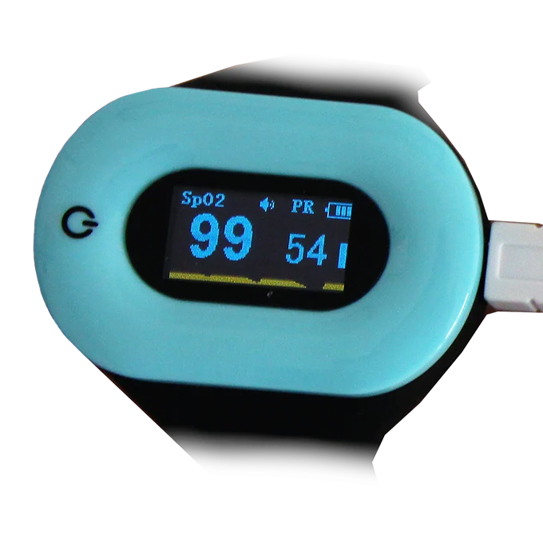
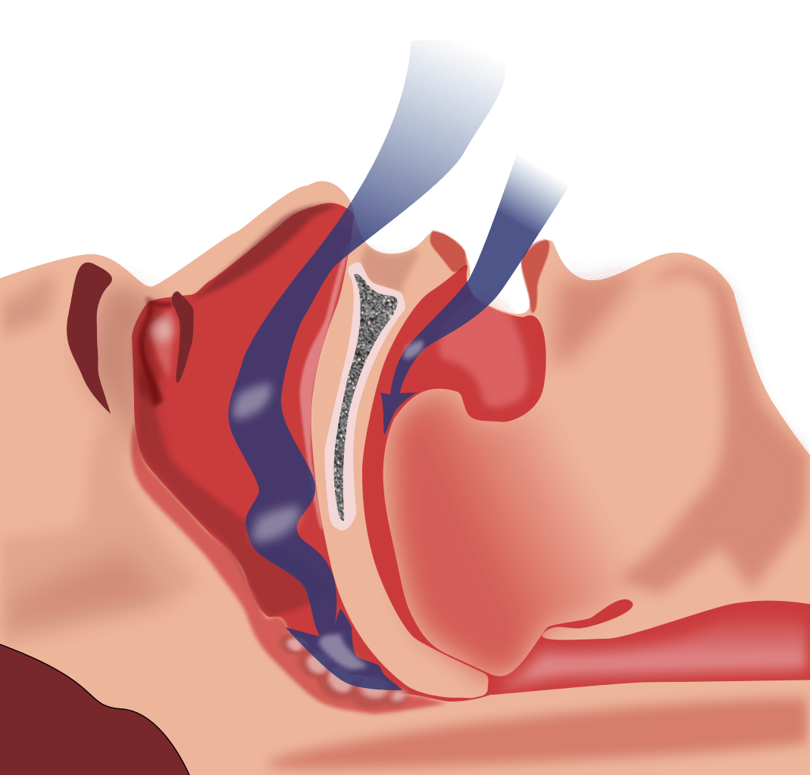
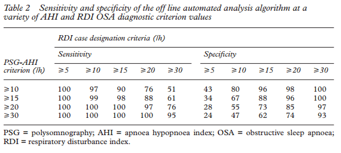
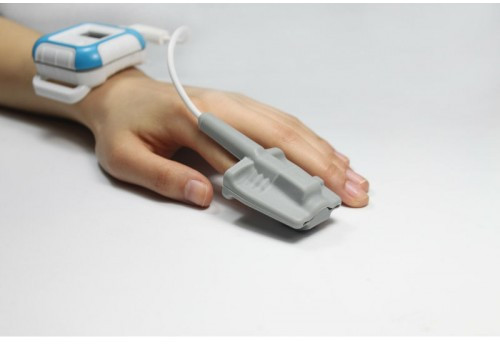

Get a compatible Oximeter for respiration monitoring#
- link:Buy Pulse Oximeter: Get a Pulse Oximeter compatible with Sleep as Android and suitable for whole night oxygenation monitoring link:HERE.

What is Sleep Apnea?#
Obstructive sleep apnea (OSA) is a disease, which can frequently be difficult to diagnose. It’s prevalence in general population is around 2 – 7% [2] (with pessimistic estimates ranging up to 25% in men [3]). More than 80% of the population is not diagnosed[1].
NOTE:Sleep Apnea is a disorder in which breathing repeatedly stops for long periods of time during the night.
This lack of breathing/oxygen often results in daytime sleepiness, fatigue-related vehicle accidents and in the long run could cause metabolic syndrome, neurocognitive deficits, vigilance decline and erectile dysfunction[4]. Untreated OSA is linked to diabetes, hypertention or stroke. Most of all, sleep apnea increases risk of early death by 46%. According to the National Commission on Sleep Disorders Research, approximately 38,000 people die annually due to cardiovascular problems, that are related to sleep apnea in one way or another.

Why is the disease so rarely diagnosed?#
Up to 93% of women and 82% of men with sleep apnea are not diagnosed. Why is that so?
It’s difficult to find out if you have sleep apnea, because you are sleeping at the time it occurs. Most people who have apnea do not know about it. But they still suffer its devastating consequences.
The recommended method of diagnosing sleep apnea is polysomnography (PSG). The patient spends a night in a sleep laboratory, tied to EKG, EEG, EMG, Oximeter and other sensors. It is understandable that even when someone suspects they might have apnea, the idea of sleeping in a lab may turn them off from taking the required actions. PSG testing can also be pretty expensive (e.g. $4600 in link:Alaska Sleep Clinic).
Do I have Sleep Apnea?#
According to link:American Academy of Sleep Medicine groups with higher risk of sleep apnea include overweight (BMI=25-29.9) and obese (BMI>30) people, people with larger neck sizes and middle-aged to older people. Also regular high snoring may be a warning sign of OSA.
Because of the high incidence (every 4th to 50th person) and insufficient diagnostics, we believe some form of pre-screening in home conditions would be extremely valuable to prevent the destructive consequences of the disease. Especially if you consider those consequences can be effectively prevented.
Pulse Oximetry can recommend visiting a doctor based on your nightly breath rates and oxygenation saturation#
The golden standard for apnea screening is PSG, which measures the AHI (apnea-hypopnea) index. Several studies has shown large correlation between AHI and ODI/RDI (oxyhemoglobin desaturation index, oximeter-derived respiratory disturbance index).

ODI/RDI indexes can be effectively obtained from Pulse Oximetry at home.

How to use Sleep as Android for Sleep Apnea pre-screening#
Sleep as Android supports link:StressLocator pulse oximeters. Simply pair your StressLocator device, enable Settings – Wearables – Pulse Oximeter, put the device on your finger and start sleep tracking.
In the morning Sleep as Android determines your RDI with the related severity scoring. Score over RDI >15 per hour is considered as a significant warning sign and visiting a sleep lab is highly recommended.
The blue line shown in graph is SpO2 curve. Every significant dip in SpO2 is marked by a O2 symbol. This indicates 1 breathing disturbance episode. Every such sign contributes 1/(sleep length hours) to the RDI.
Warning: The use of Sleep as Android does not contain or constitute, and should not be interpreted as, medical advice or opinion. We are not licensed medical professionals, and we are not in the business of providing medical advice. You should always consult a qualified and licensed medical professional prior to beginning or modifying your sleep or lifestyle habits. Your use of this App does not create a doctor-patient relationship between you and the provider.
For details please refer to Oximeter and SPO2 and breath rates
References#
[1] T. Young, L. Evans, L. Finn, and M. Palta, “Estimation of the clinically diagnosed proportion of sleep apnea syndrome in middle-aged men and women.,” Sleep, vol. 20, no. 9, pp. 705–6, Sep. 1997.
[2] T. Young, M. Palta, J. Dempsey, J. Skatrud, S. Weber, and S. Badr, “The occurrence of sleep-disordered breathing among middle-aged adults.,” N Engl J Med, vol. 328, no. 17, pp. 1230–5, Apr. 1993.
[3] N. Marshall, K. Wong, P. Liu, S. Cullen, M. Knuiman, and R. Grunstein, “Sleep apnea as an independent risk factor for all-cause mortality: the Busselton Health Study.,” Sleep, vol. 31, no. 8, pp. 1079–85, Aug. 2008.
[4] L.-W. Hang, H.-L. Wang, J.-H. Chen, J.-C. Hsu, H.-H. Lin, W.-S. Chung, and Y.-F. Chen, “Validation of overnight oximetry to diagnose patients with moderate to severe obstructive sleep apnea,” BMC Pulmonary Medicine, vol. 15, no. 1. Springer Science + Business Media, 20-Mar-2015 [Online]. Available: http://dx.doi.org/10.1186/s12890-015-0017-z
[5] Vazquez, J., Tsai, W., Flemons, W., Masuda, A., Brant, R., Hajduk, E., … Remmers, J. (2000). Automated analysis of digital oximetry in the diagnosis of obstructive sleep apnoea. Thorax, 55(4), 302–307. http://doi.org/10.1136/thorax.55.4.302 Proudly powered by WordPress | Theme: Sydney by aThemes.